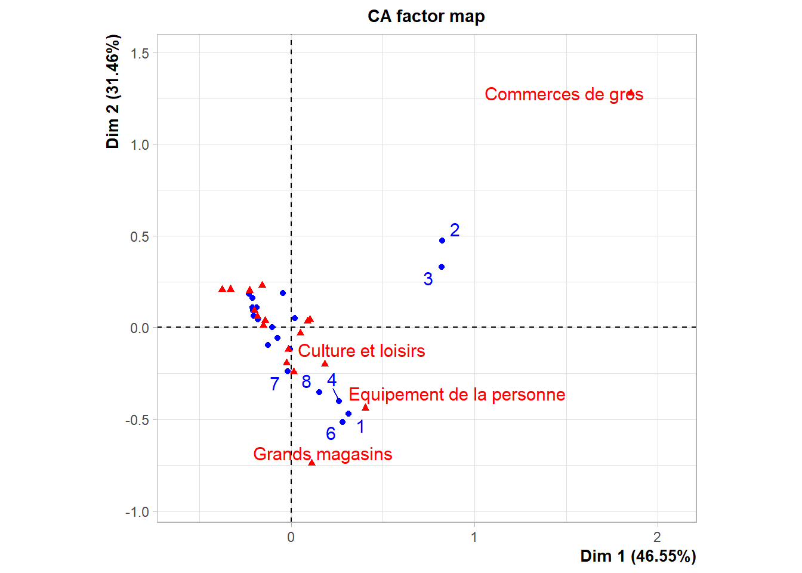

Chapitre 7 Analyses factorielles
7.1 Origine et histoire
Par analyse factorielle, on entend finalement un ensemble de méthodes dont l’objectifs est d’extraire d’un ensemble multivariée de données, un petit nombre de dimensions, les facteurs, qui rendent compte l’essentiel des variations. Elles partagent aussi une même structure mathématique qui permet de décomposer et de réduire une matrice de données en un ensemble de matrice de dimensions réduite.
On peut en distinguer deux écoles, l’une alimentée par des questions de psychométrie a nourrit plusieurs decennies de recherche en traitant les tests psychométriques. L’autre française s’intéressent aux variables qualitatives, et a une perspective plus descriptive et représentationnelle.
7.1.1 Une petite histoire de la psychométrie
L’analyse factorielle trouve son origine, en psychologie, dans l’intuition que dans des épreuves multiples un facteur principal contrôle les variation des items (les performance à différents tests). Mais c’est avec Thurstone que l’idée prend toute son ampleur en permettant que plusieurs facteurs traduisent la structure de la matrice de corrélations entre les tests. Spearman, hotelling,.
Dans le monde de la gestion et en particulier de la GRH et du marketing, largement inspirés par la psychologie et la psychologie sociale, ces méthodes se sont propagées et ont formalisé un processus d’étude largement fondé sur ces techniques. Il est bien connu par de processus de Churchill qui a synthésisé une manière de construire et de développé des instruments de mesure par questionnaire. C’est l’ article de historique de Churchill ( ref).
7.2 Le modèle factoriel des tests psychologiques
7.2.1 Un peu de théorie
La première historiquement est celle des psychologues et en particulier le modèle en terme de facteurs communs et spécifiques. Elle vise à partir de l’analyse d’une matrice de corrélation à identifier des éléments de structures sous-jascents.
La structure du modèle factoriel peut être présentée de manière simple. On supposera que chaque variables observées peut être décrites comme composées de facteurs généraux (\(F_{ik}\) ) et de facteurs spécifiques $ _{i}$. Le modèle suppose ainsi que la valeur de l’individu i pour la variable j, dépend de k facteurs sous jascents, les facteurs communs, et d’un terme spécifique à l’item et à l’individus
$$ x_{ij}= a_{1j}F_{i1} + a_{2j}F_{i2} + + a_{jk}F_{ik}+_{ij}
$$
On peut représenter celà de manière plus graphique, en utilisant les conventions symboliques des modèles structurels qu’on examine dans le chapitre 9. On y verra d’ailleurs comment ce modèle peut être spécifié de manière confirmatoire.
On remarquera dans cette structure que les facteurs peuvent être corrélés.
Modèle Factoriel exploratoire - EFA
7.2.2 L’estimation
Certains lecteurs seront surpris de cette présentation, ils sont sans doute plus habitués à factoriser en employant une méthode de l’ ACP. Effectivement cette méthode sur laquelle on va revenir avec plus de détail dans la seconde section de ce chapitre, est une des techniques qui permettent d’approcher le modèle théorique que l’on vient de présenter. Elle n’est pas la seule.
L’estimation du modèle requierts deux décisions : l’une sur la méthode d’extraction des facteurs, et l’autres sur la méthode de rotation.
les méthodes d’extraction
- ACP
- ML
- analyse en facteur principaux et spécifiques
Les méthodes de rotation.
- Varimax
- Promax
- Oblimin
- …
7.2.3 Ressources
On utilise principalement le package psych développé par Revelle et dédié à la psychométrie. Il couvre le plus complétement le champs de l’analyse factorielle et de la psychométrie.
S’y ajoutent deux fonctions très utiles pour représenter le résultats des analyses sous une forme lisible et au standard des publications scientifiques. Elles utilisent les ressources de flextable.
#library(corrplot)
#library(psych)
#library(flextable)
# Une fonction utile pour créer
flex <- function(data, title=NULL) {
# this grabs the data and converts it to a flextbale
flextable(data) %>%
# this makes the table fill the page width
set_table_properties(layout = "autofit", width = 1) %>%
# font size
fontsize(size=10, part="all") %>%
#this adds a ttitlecreates an automatic table number
set_caption(title,
autonum = officer::run_autonum(seq_id = "tab",
pre_label = "Table ",
post_label = "\n",
bkm = "anytable")) %>%
# font type
font(fontname="Times New Roman", part="all")
}
# et une seconde fonction pour le tableaux des loadings
fa_table <- function(x, cut) {
#get sorted loadings
loadings <- fa.sort(x)$loadings %>% round(3)
#supress loadings
loadings[loadings < cut] <- ""
#get additional info
add_info <- cbind(x$communality,
x$uniquenesses,
x$complexity) %>%
# make it a data frame
as.data.frame() %>%
# column names
rename("Communality" = V1,
"Uniqueness" = V2,
"Complexity" = V3) %>%
#get the item names from the vector
rownames_to_column("item")
#build table
loadings %>%
unclass() %>%
as.data.frame() %>%
rownames_to_column("item") %>%
left_join(add_info) %>%
mutate(across(where(is.numeric), round, 3))
}L’objectif des méthodes d’analyses factorielles est de réduire un ensemble de variables à un petit nombre de dimensions qui résument l’essentiel de l’information.
7.2.4 Cas d’application
Pour appliquer la méthode on va s’interesser à l’échelle des valeurs de kahle qui sont mesurée dan différents pays au cours des différentes vagues de l’enquête ESS?
Les variables mesurées sont un ensemble de 21 questions qui proposent des niveaux d’importances accordées à 21 questions, ou items, dont voici les formulation en anglais. Les répondants ont le choix sur une échelle de 0 à 10 qui va de “pas du tout important” à “très important”. On se concentre sur les observations de la dernière vague.
Cette échelle a été développée par kahle.
En voici les itms dans leur formulation anglaise.
- IPCRTIV Important to think new ideas and being creative
- IMPRICH Important to be rich, have money and expensive things
- IPEQOPT Important that people are treated equally and have equal opportunities
- IPSHABT Important to show abilities and be admired
- IMPSAFE Important to live in secure and safe surroundings
- IMPDIFF Important to try new and different things in life
- IPFRULE Important to do what is told and follow rules
- IPUDRST Important to understand different people
- IPMODST Important to be humble and modest, not draw attention
- IPGDTIM Important to have a good time
- IMPFREE Important to make own decisions and be free
- IPHLPPL Important to help people and care for others well-being
- IPSUCES Important to be successful and that people recognise achievements
- IPSTRGV Important that government is strong and ensures safety
- IPADVNT Important to seek adventures and have an exciting life
- IPBHPRP Important to behave properly
- IPRSPOT Important to get respect from others
- IPLYLFR Important to be loyal to friends and devote to people close
- IMPENV Important to care for nature and environment
- IMPTRAD Important to follow traditions and customs
- IMPFUN Important to seek fun and things that give pleasure
# On renomme les variables pour une meilleure lecture et on selectionne le tableau de données utile à l'analyse.
df <- read_csv("./Data/ESS1-9e01_1.csv") %>%
rename(
V_creative=ipcrtiv,
V_richness= imprich,
V_justice =ipeqopt,
V_admiration=ipshabt,
V_security=impsafe,
V_novelty=impdiff,
V_conformism=ipfrule,
V_openmindedness=ipudrst,
V_modesty=ipmodst,
V_fun=ipgdtim,
V_autonomy=impfree,
V_Care=iphlppl,
V_Success=ipsuces,
V_Autority =ipstrgv,
V_Adventures=ipadvnt,
V_wellbehavior=ipbhprp,
V_respect=iprspot,
V_loyalty=iplylfr,
V_environnement=impenv,
V_tradition=imptrad,
V_pleasure=impfun)
foo1<-df %>% filter(essround==9)%>%
dplyr::select(matches("V_.*"), cntry) %>% #notons la selection fondée sur des regex
drop_na()7.3 Examen de la matrice de corrélation
Calculons la matrice de corrélation, et présentons là en organisant l’ordre des variables selon leur corrélation. A ce stade indiquons qu’il s’agit de mettre un ordre dans les variables, tel que des variables fortement corrélées soient adjascentes (on revient sur la méthode utilisée dans le chapitre suivant).
On s’aperçoit qu’une structure émerge. Quatre groupes de variables peuvent être discernées: * la jouissance * le succès social * l’ouverture aux autres * la sécurité
Dans le filigrane de la matrice de corrélation, on devine une structure factorielle.
7.4 Modèle factoriel
Testons un modèle d’analyse factorielle à 4 dimensions. Nous l’augmentons d’un procédure de rotation oblimin pour un meilleur ajustement.
fa <- fa(foo,4, rotate="oblimin") #principal axis
fa_table(fa, .30)%>%
flex("A Pretty Factor Analysis Table")item | MR1 | MR4 | MR3 | MR2 | Communality | Uniqueness | Complexity |
V_openmindedness | 0.692 | 0.472 | 0.528 | 1.002 | |||
V_justice | 0.665 | 0.399 | 0.601 | 1.044 | |||
V_Care | 0.621 | 0.516 | 0.484 | 1.145 | |||
V_environnement | 0.561 | 0.427 | 0.573 | 1.171 | |||
V_loyalty | 0.518 | 0.493 | 0.507 | 1.570 | |||
V_autonomy | 0.438 | 0.364 | 0.636 | 1.603 | |||
V_creative | 0.429 | 0.341 | 0.659 | 2.225 | |||
V_modesty | 0.421 | 0.301 | 0.339 | 0.661 | 1.967 | ||
V_admiration | 0.697 | 0.505 | 0.495 | 1.049 | |||
V_Success | 0.644 | 0.539 | 0.461 | 1.094 | |||
V_richness | 0.526 | 0.336 | 0.664 | 1.402 | |||
V_respect | 0.419 | 0.379 | 0.383 | 0.617 | 2.157 | ||
V_wellbehavior | 0.604 | 0.461 | 0.539 | 1.094 | |||
V_tradition | 0.531 | 0.323 | 0.677 | 1.111 | |||
V_conformism | 0.464 | 0.265 | 0.735 | 1.166 | |||
V_security | 0.445 | 0.386 | 0.614 | 2.047 | |||
V_Autority | 0.395 | 0.369 | 0.631 | 1.921 | |||
V_pleasure | 0.758 | 0.561 | 0.439 | 1.035 | |||
V_fun | 0.531 | 0.413 | 0.587 | 1.145 | |||
V_Adventures | 0.506 | 0.465 | 0.535 | 1.829 | |||
V_novelty | 0.392 | 0.431 | 0.569 | 2.553 |
fa[["Vaccounted"]] %>%
as.data.frame() %>%
#select(1:5) %>% Use this if you have many factors and only want to show a certain number
rownames_to_column("Property") %>%
mutate(across(where(is.numeric), round, 3)) %>%
flex("Eigenvalues and Variance Explained for Rotated Factor Solution")Property | MR1 | MR4 | MR3 | MR2 |
SS loadings | 3.122 | 1.958 | 1.897 | 1.813 |
Proportion Var | 0.149 | 0.093 | 0.090 | 0.086 |
Cumulative Var | 0.149 | 0.242 | 0.332 | 0.419 |
Proportion Explained | 0.355 | 0.223 | 0.216 | 0.206 |
Cumulative Proportion | 0.355 | 0.578 | 0.794 | 1.000 |
Le set de données que nous avons traité est composé de 15 échantillons venant d’autant de pays. Puisque nous avons réduits les 22 mesures initiales à 4 grands facteurs, il est temps d’analyser les différences entre les pays.
On va d’abord récupérer les scores de chaque observation sur les quatre dimensions obtenues qu’on ajoute à notre fichier de travail pour récupérer la variable pays.
#récupérer les scores
scores<-fa$scores
scores<-as.data.frame(unclass(scores))
#matcher pour récupérer la variable pays et renommer pour plus de lisibilité
df_typo<-cbind(foo1, scores) %>%
rename(F_Altruisme = MR1,
F_Conservatisme=MR2,
F_Performance=MR4,
F_Hedonisme=MR3)
# On calcule les scores moyens par pays et les erreurs d'échantillonage
df_g <- df_typo %>%
dplyr::select(matches("F_.*"), cntry)%>%
gather(variable, value,-cntry)%>%
mutate(n=1)%>%
group_by(variable,cntry)%>%
summarize(mean=mean(value),
n=sum(n),
se=sd(value)/sqrt(n))
#on représente les résultats
ggplot(df_g,aes(x=cntry, y=mean))+
geom_bar(stat="identity",aes(fill=variable), size=1.5)+ coord_flip()+
geom_errorbar(aes(ymin=mean-se, ymax=mean+se), width=.2, position=position_dodge(.9)) +
scale_color_brewer(palette = "Set1")+
facet_wrap(vars(variable),ncol=2)
7.5 L’analyse en composante principale
L’ACP, dont l’optique est différente dans le sens où l’on cherche moins à rendre compte d’une structure sous-jascente à la matrice de corrélation , qu’à réduire l’information dans un espace limité.
7.5.1 le problème théorique
De manière intuitive l’ACP est la technique qui permet de représenter un poisson, une structure, sous son jour le plus intelligible, c’est à dire celui qui magnifie ses variations.
Examinons un poisson sous différentes projections. La première image rend mieux compte de la forme du poisson que la seconde, elle ne diffère que par la projection. De l’une à l’autre il n’y a qu’y rotation à 90°C vers la droite. C’est la même image, le même phénomène mais représenté selon deux perspectives, deux bases en terme de mathématiques. On comprend que pour représenter un objet au mieux dans un faible nombre de dimensions, il faut trouver la base vectorielle qui maximise les variations de taille.
résoudre ce problème est ce que fait l’ACP

Modèle Factoriel exploratoire - EFA
7.5.2 Une représentation symbolique
L’idée va donc être de décomposer une matrice de variance-covariance (ou de corrélation) en respectant une contraintes : faire en sorte que le maximum de variance soit capturée par la première dimension, puis par les suivantes successivement. La solution à ce problème se trouve dans la résolution d’un problème matriciel. Il faut procéder à un changement de base, autrement dit à un changement de référentiel.
La matrice de variance-covariance, ou de corrélation, si on a, au préalable, centré et standardisé les valeurs des variables, est obtenue simplement en multipliant la matrice de données (individus x variable) par sa transposée.
\[ \Sigma = XX^t \] Comme \(\Sigma\) est symétrique, elle est diagonalisable et peut-être représentée par une matrice de score W et une matrice diagonale D.
\[ \Sigma_{e} =WDW^T \] où D est la matrice diagonale des valeurs propres et W la matrice des composantes comprenant les j variables ( en ligne) et les k dimensions (en colonne). L’équivalence suppose que le nombre de composantes est égal au nombre de variables initiales, Cependant l’usage conduit à ne retenir qu’un petit nombre de dimensions de telles sorte à ce que la différence entre \(\Sigma\) et \(\Sigma_{e}\) soit relativement petite. La matrice de score comprend autant de lignes que d’individus et de colonnes que de dimensions-sous-jascentes.
On remarquera que dans ce modèles on a autant de composantes que de variables, mais que ces dernières représentent une part décroissante de la variance. Certaines composantes n’ont pas de sens on se concentrera sur les premières rejoignant l’idée de l’analyse factorielle : peu de composantes, de facteurs, rendent compte des variations des données.
On restera cependant conscient que l’ACP n’est au fond qu’une manière de représenter les données, juste une projection. Ne retenir que les premières composantes va au-delà du modèle, c’est une démarche qui consiste à considérer que seules les premières composantes sont significatives, en apportant du sens, et les dernières peuvent être négligée. C’est une manière approximative de rejoindre le modèle factoriel, une solution simple pour en obtenir une solution.
7.5.3 Application
En guise d’application on va utiliser un tout petit jeu de données issu de l’analyse précédente : le tableau des profils pays, sur les 21 valeurs de Kahle. Avec cette procédure d’aggrégation on réduit fortement la variance individuelle, pour ne garder que des différences en moyenne d’un pays à l’autre.
Le plus ici ne va plus être de comprendre la structure profonde des données, mais simplement de représenter ces différences dans un espace réduit.
foo<-foo1%>%
group_by(cntry)%>%
summarise(across(V_creative:V_pleasure, ~ mean(.x, na.rm = TRUE)))
#on note la fonction qui permet de résumer plusieurs variables à la fois
X<- foo%>%
dplyr::select(-cntry)%>%
as.data.frame()
rownames(X) <- foo$cntryPlusieurs bibliothèque, en plus de la fonction de base princomp, propose une solution d’ ACP. On choisit d’utiliser celle du package Factominer qu’on accompagne de la bibliothèque factoextra pour ses ressources graphiques.
Les résultats portent sur 3 éléments : les valeurs propres de chacune des dimensions retenues, les coordonnées des vecteurs variables, et celles des points individus.
library("FactoMineR")
library("factoextra")
res.pca<-PCA(X, scale.unit = TRUE, ncp = 2, graph = FALSE)
print(res.pca)## **Results for the Principal Component Analysis (PCA)**
## The analysis was performed on 15 individuals, described by 21 variables
## *The results are available in the following objects:
##
## name description
## 1 "$eig" "eigenvalues"
## 2 "$var" "results for the variables"
## 3 "$var$coord" "coord. for the variables"
## 4 "$var$cor" "correlations variables - dimensions"
## 5 "$var$cos2" "cos2 for the variables"
## 6 "$var$contrib" "contributions of the variables"
## 7 "$ind" "results for the individuals"
## 8 "$ind$coord" "coord. for the individuals"
## 9 "$ind$cos2" "cos2 for the individuals"
## 10 "$ind$contrib" "contributions of the individuals"
## 11 "$call" "summary statistics"
## 12 "$call$centre" "mean of the variables"
## 13 "$call$ecart.type" "standard error of the variables"
## 14 "$call$row.w" "weights for the individuals"
## 15 "$call$col.w" "weights for the variables"Le premier élément d’analyse et le graphe des éboulis ( ou scree plot) qui représentent les variances projetées sur chacune des composantes. Ici deux composantes représentent les deux tiers de la variance expliquée.

fviz_pca_var(res.pca, col.var = "cos2",
gradient.cols = c("#00AFBB", "#E7B800", "#FC4E07"),
repel = TRUE # Évite le chevauchement de texte
)
fviz_pca_ind(res.pca, col.ind = "cos2",
gradient.cols = c("#00AFBB", "#E7B800", "#FC4E07"),
repel = TRUE # Évite le chevauchement de texte
)
### ce merveilleux bi plot
fviz_pca_biplot(res.pca, col.ind = "cos2", labelsize = 3,
gradient.cols = c("#00AFBB", "#E7B800", "#FC4E07"),
repel = TRUE )# Biplot des individus et variables
7.6 Une généralisation de l’ACP : l’AFC
L’AFC trouve une application remarquable dans l’analyse de tableaux croisés. Elle est une méthode de réprésentation des profils lignes et colonnes:
On s’aperçoit que deux analyses peuvent être menées : l’une sur les colonnes, et l’autres sur les lignes. Dans les deux cas cette analyse peut se faire en comparant les colonnes (lignes) selon la formule suivante
\[ d_{i,j}= (f_{.i}-f_{.j})^2 \] L’idée maintenant est claire : on mène deux acp, en ligne et en colonne, et on projettent conjointement ( dans un même espace)
library(readr)
BDCOM_2020 <- read_csv("Data//BDCOM/BDCOM_2020.csv") %>%rename(CODACT=CODE_ACTIVITE)
BDCOM_2017_CODACT_OD <- read_delim("Data/BDCOM/BDCOM_2017_CODACT_OD.csv",
delim = ";", escape_double = FALSE, trim_ws = TRUE)
df<-BDCOM_2020%>%left_join(BDCOM_2017_CODACT_OD, by = "CODACT")%>%rename(ACT=27)
t<-table(df$ARRONDISSEMENT,df$ACT )
res.ca <- CA(t,
graph = TRUE)

fviz_ca_biplot(res.ca, labelsize = 2, repel=TRUE)+
theme(text = element_text(size =7)) +xlim(-0.75, 1)+ylim(-.75,0.75)
règle d’interprétation
- le point (0,0) représente le baycentre du nuage de point,et donc l’invidu moyens
- les lignes/colonne les plus extcentrée sont les moins présentes, la distance d’une modalité d’une variable à une autres, indique la correspondance de ces deux modalités qui partagent les mêmes individus.
- l’inertie total est chi²/n et donc une véritable méthode : analyse de la décomposition du khi2.
Dans notre exemple on note de suite les arrondissement 1 et 2 qui sont les plus proches de la catégorie commerce de gros.
On note aussi une disposition linéiaire qui opposent les arrondisssement excentré, aux arrondissement du centre. Un univers commercial résidentiel vs un univers de transit (spectacles et grands magasins)
7.6.1 AFCM multiple
Très rapidement la méthode a été appliquée à une généralisation des tableaux croisés : le tableau de burt, ou son équivalent : le tableau disjonctif complet.
exemple
La mise en oeuvre par factominer permet d’employer une techniques de représentation de variables complémentaires : elles n’interviennent pas dans le calcul de la configuration factorielles, mais leurs positions dans l’espace sont calculées comme le barycentre des individus qui possède le trait considéré. Leur projection a un rôle illustratif.
##
## Agences Alimentaire
## 4240 7663
## Auto-Moto Autres locaux en boutique
## 823 9215
## Bricolage-Jardinage Cafés et Restaurants
## 907 15247
## Commerces de gros Culture et loisirs
## 1009 5289
## Equipement de la maison Equipement de la personne
## 2666 7324
## Grands magasins Hôtels et Auberges de jeunesse
## 9 1894
## Locaux vacants Médical
## 8761 2094
## Santé-Beauté Services aux entreprises
## 2906 535
## Services aux particuliers Spectacles
## 12453 237foo<-df%>% dplyr::select(ACT, SURFACE, SITUATION, LIBACT, ARRONDISSEMENT)%>%
as.matrix()
res<-MCA(foo,graph = FALSE,quali.sup=5)
fviz_mca_var(res, labelsize = 2, repel=TRUE)
remarques complémentaires : * pas de signification de l’inertie globale qui dépend de la structure du tableau ( nombres de variables et de leurs modalités)
7.7 Développements
derrière les méthodes il y a un principe mathématique fondamental qui est au fondement de bien d’autres méthodes factorielles. C’est celle de la Singular Variance décomposition dont l’ACP est finalement un cas particulier.
7.7.1 le SVD
Le modèle mathématique fondamental
décomposer une matrice en plusieurs matrices l’acp une application à une matrice de nature particulières : la matrice de covariance ou de corrélation si standardisée
de nombreuses autres applications :
- à des matrices de comptage
- compression d’image
- information retrieval
d’autres méthodes s’appuient sur ce principe fondamental, et permettent de traiter des données textuelle .
On repporte le lecteur au chapitre X de Booh NLP.
LSA NFM
7.7.2 ACM , analyse canonique , analyse discriminante
Si ACP, AFC et AFCM ont pris le devant de la scène, bien d’autre méthodes analogues ont été développées
- ACM
- Analyse canonique
- Analyse factorielle discriminante qui a perdu du terrain au profit du modèle de régression logistique.
7.8 En conclusion
une idée essentielle : réduire de nombreuses variables à un petit jeu de variables synthétiques
des méthode au coeur de l’analyse des données
une autre idée essentielle : celle de vectoriser les données qu’on observe